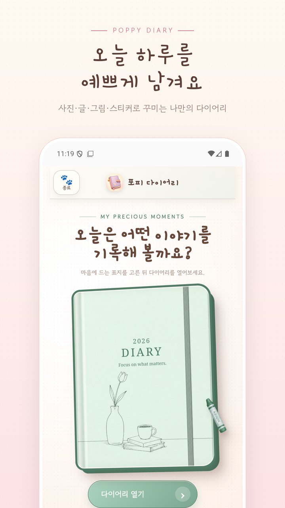
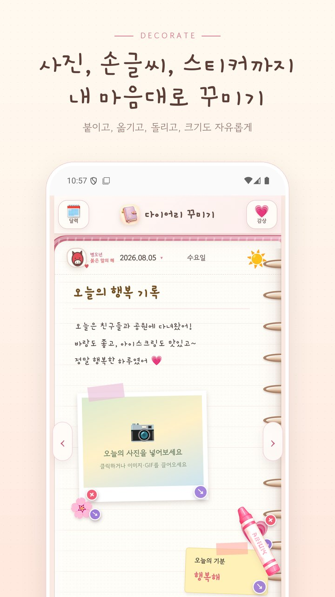
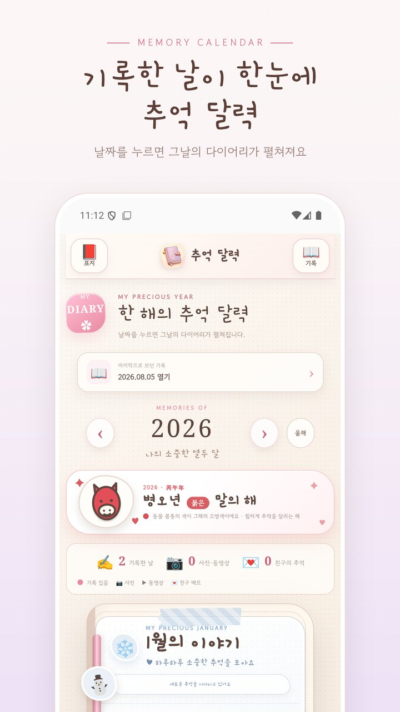
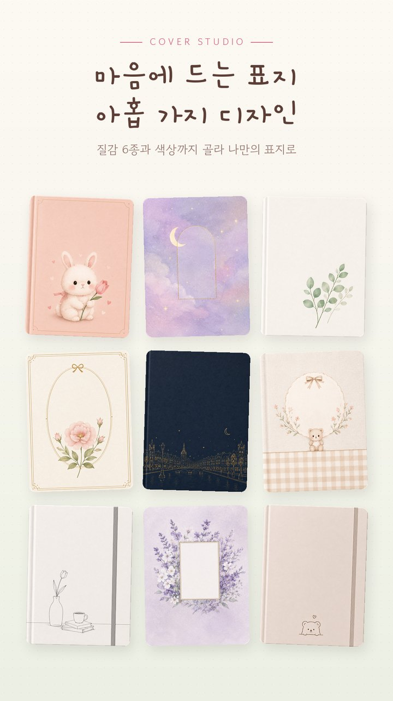
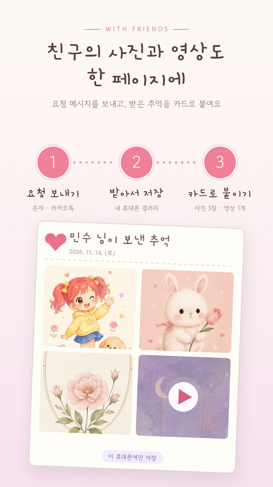
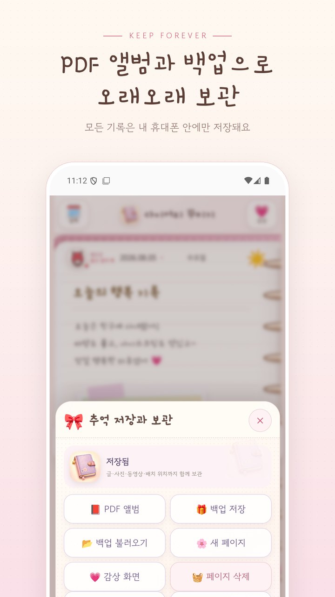

← 앱·게임 프로젝트로
포피 다이어리
사진·글·그림·스티커로 오늘 하루를 예쁘게 남기고, 친구가 보내준 사진과 영상까지 한 페이지에 담는 나만의 추억 다이어리 앱입니다.

오늘 하루를 예쁘게 남겨요마음에 드는 표지를 고르고 다이어리를 엽니다

사진·손글씨·스티커로 꾸미기붙이고, 옮기고, 돌리고, 크기도 자유롭게

기록한 날이 한눈에, 추억 달력날짜를 누르면 그날의 다이어리가 펼쳐져요

표지 아홉 가지 디자인질감 6종과 색상까지 골라 나만의 표지로

친구의 사진과 영상도 한 페이지에요청을 보내고, 받은 추억을 카드로 붙여요

PDF 앨범과 백업으로 오래오래모든 기록은 내 휴대폰 안에만 저장돼요
모든 기록은 서버가 아닌 내 휴대폰 안에만 저장됩니다. PDF 앨범과 백업 파일로 오래 보관할 수 있어요.
앱·게임 프로젝트로 돌아가기 →